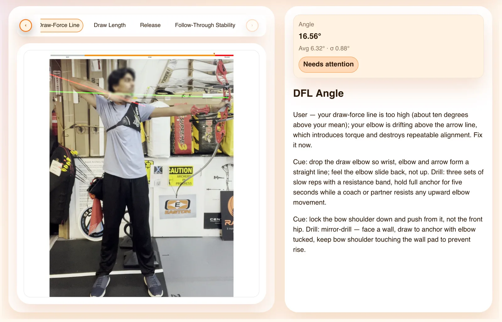
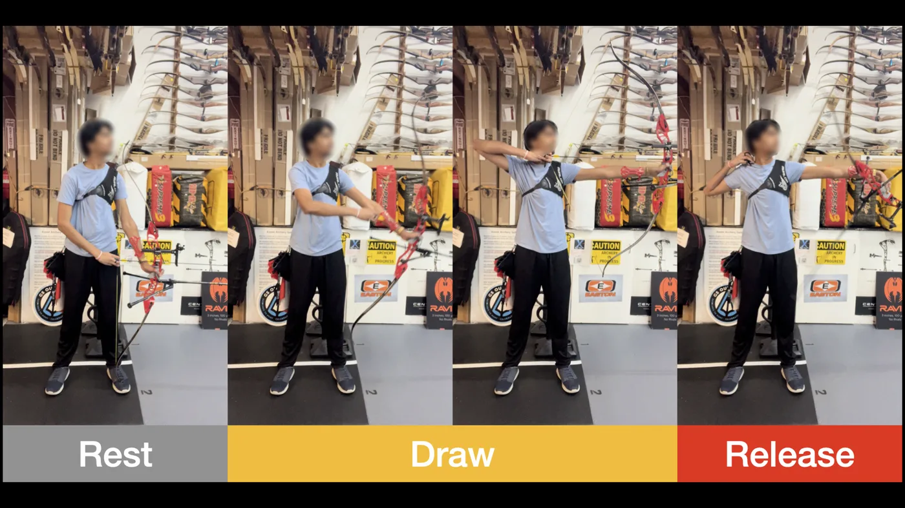

FIG. 06 — RESEARCH
Toward consistent archery form via video pose analysis and language-model-based coaching feedback. An archer's practice clip goes in; measured inconsistencies and a drill come out.

Accurate archery depends on reproducing the same timing, alignment, and follow-through shot after shot. But athletes mostly train without feedback, because a coach cannot watch every attempt — and coaching hours are expensive.
The gap isn't knowledge, it's observation bandwidth. A coach standing behind you catches maybe one shot in ten. The other nine are unmeasured, and inconsistency is exactly the thing that only shows up across repetitions.
STRAIGHT closes that by evaluating each shot in the context of the archer's own prior attempts — not against a textbook ideal. It quantifies how consistently timing, alignment, and stability are reproduced, then an LLM turns those numbers into coaching-style feedback with a specific drill attached.
Tiannu Zhang (Boston University), Keshav Kumar (Queen's University), Chang Xiao (Boston University). Accepted as a poster at ACM UIST. Codebase to be released.
Real output from the paper, on one shot. Each measure is stated against that archer's rolling average, so "good" means consistent with yourself, not close to a model form.
7.75s
avg 6.52s ± 0.94s
Late by 1.23s against your average, and recurring across recordings. Drill: metronome rhythm — draw, settle to the beat, release on the next.
7.86°
avg 6.13° ± 0.85°
Draw-force line tilted higher than usual; pulling the elbow up adds torque at release. Drill: resistance-band reverse draw until the wrist–elbow–arrow line feels straight.
6.6°
93.7° → 87.1°, target < 5.0°
Bow arm collapses after release. Drill: isometric push toward the target at full draw, held through the release.
Good
within tolerance
Spine is straight. Nothing to correct — reported so the athlete knows it was checked, not skipped.
| Result | Measure |
|---|---|
| Phase detection, low-res and dummy aids | 98% |
| Shot-phase model, within 10 frames | 87% |
| Pose features screened | 100+ |
| Predictive variables retained | 15 |
| Practice points analysed | 500+ |
| Consistency metrics | 6 |
Accepted as a poster at ACM UIST. Co-authored; the segmentation pipeline and feature selection were my contribution.
The interesting constraint was label cost. Hand-labelling phase boundaries across 733 frames per clip does not scale, so the segmentation can't assume a labelled dataset exists.
The approach: pose heuristics narrow the plausible window for a boundary, then binary-search VLM queries locate it — roughly log₂(n) queries instead of classifying every frame. That's what holds 98% phase detection even on low-resolution video and with dummy training aids, where a naive frame classifier degrades badly.

My other piece was feature selection: screening 100+ candidate pose features down to the 15 that actually carried predictive signal, then the random-forest phase model built on them.